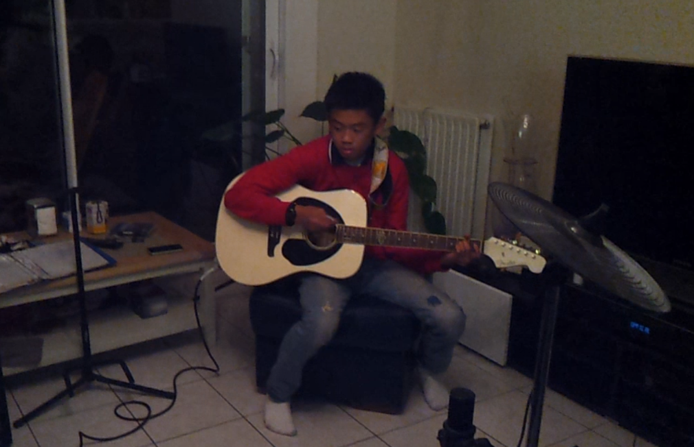

Musique
music_noteJe suis un passionné de musique, j’ai embrassé le monde de la guitare en tant qu'autodidacte, naviguant à travers les vastes ressources d'Internet pour forger mon propre chemin musical.

L'Art de l'Autodidaxie Musicale
Ma rencontre avec la guitare a été une aventure autodidacte, une exploration constante de nouvelles notes, de nouveaux accords, et de mélodies qui résonnent avec mon âme.
Grâce à la richesse des tutoriels en ligne, des forums de passionnés, et des leçons vidéo, j'ai tracé mon propre parcours musical sans frontière.
Internet, Mon Professeur Virtuel
Chaque accord, chaque riff, chaque progression d'accords a été maîtrisé à travers une connexion Internet.
Des plateformes d'apprentissage en ligne aux forums de musiciens, j'ai puisé dans la sagesse collective du monde virtuel pour affiner ma technique et affirmer mon style unique.
Inspiration : Ed Sheeran
Ed Sheeran a été ma source d'inspiration constante. Son talent exceptionnel, sa simplicité et son approche authentique de la musique ont nourri ma passion. Les mélodies uniques de Sheeran ont influencé ma manière d'aborder la guitare.
De l'écran à la Scène Virtuelle
C'est sur la toile que j'ai trouvé l'inspiration nécessaire pour transformer mes apprentissages solitaires en véritables performances.
Des vidéos de covers sur les réseaux sociaux aux collaborations virtuelles avec d'autres passionnés, mon aventure musicale a pris vie dans le monde numérique.
La Guitare, une Connexion Virtuelle et Personnelle
La guitare est bien plus qu'un instrument pour moi. C'est une connexion virtuelle et personnelle avec chaque corde, chaque accord, chaque émotion que je fais résonner à travers les vibrations de ma guitare.
Extrait de la chanson Can't help falling in love de Elvis Presley à la guitare acoustique :
Extrait de Sadness and Sorrow dans Naruto à la guitare acoustique :